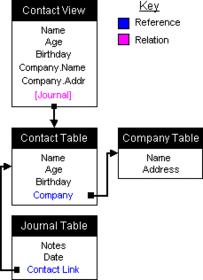
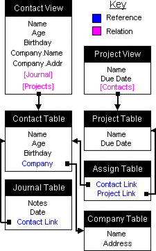

| Help Topics > Concepts & Tutorials |
| DatabasePlus Concepts 2 Table and View Relationships |
| This page demonstrates several database layouts that are possible with DatabasePlus. |
|
There are four types of relationships you can build:
Here is a diagram of a three table and one view model that makes up a simple contact manager:  Notice that the Journal table has a reference to the Contacts table. This order is very important, because where you create the link determines the type of relationship. In this case, it creates a one-to-many relationship - there are many journal entries for one contact, and Contacts is the primary table. If you created a link to the Journal table in the Contacts table, you would have created a one-to-one relationship, which would only allow you to have one journal entry per contact. The Contacts to Company reference is an example of a one-to-one relationship, where one contact can only belong to one company. The general rule of thumb is:
More On Many-to-Many Relationships Sometimes you need a many-to-many relationship, where many records in one table reference many records in a second. An example would be Projects-to-People, where multiple people can be working on the same project, but any one person may also be working on multiple projects. To accomplish this, you need an intermediate table. This table acts as a bridge between the two tables that use a many-to-many relationship. As in a one-to-many relationship, the reference is created in the table that has many records to the one record in the other. The result is to create two references in the intermediate table - one to the first table, and one to the second. Create your views using the base tables and you will have a one-to-many relationship for each primary table. Here is an updated Contact Manager diagram that includes a many-to-many reference between the Contacts and Projects tables:  |